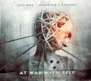

| Artist: | At War With Self |
| Title: | Torn Between Dimensions |
| Label: | Free Electric Sound FES 4004 |
| Length(s): | 55 minutes |
| Year(s) of release: | 2005 |
| Month of review: | [09/2005] |
| 1) | The God Interface | 4.04 |
| 2) | Torn Between Dimensions | 5.57 |
| 3) | A Gap In The Stream Of Mind Part One | 4.11 |
| 4) | Grasping At Nothing | 5.22 |
| 5) | Coming Home | 5.30 |
| 6) | The Event Horizon | 5.18 |
| 7) | A Gap In The Stream Of Mind Part Two | 7.45 |
| 8) | Run | 3.04 |
| 9) | A Gap In The Stream Of Mind Part Three | 1.37 |
| 10) | At War With Self | 7.17 |
Torn Between Dimensions brings us the same ingredients, and the same overall feel. The song has an alternating pace going from relaxed and acoustic to heavy guitars at a higher pace. A Gap In The Stream Of Mind Part One shows more of that strong, melodic, orchestrated instrumental rock. Never mind blowingly bombastic, but versatile and there is certainly no place for meandering. Striking is also the large amount of acoustic guitar that add that extra bit of melodicity. The rhythm guitars keep the sound full, and somewhat leaning toward the heavy.
Grasping At Nothing is not very different in that respect. Striking is the more Latin like approach, and the hammered percussion. It seems to me that Zonder is particularly happy to play in this very loose, jazzrock like style.
Coming Home is simply acoustic at first, with a moody bass setting in and keyboards in the back. Again, the guitar is very much in Spanish style, and overall this song is very relaxed. One is tempted to think in the direction of ECM style music, like that of Pat Metheny.
The Event Horizon is a great opener with thunderous drums and guitars. It nicely offsets its relaxed predecessor. Then the music takes on a slightly classical character. Almost seems like a violin they are playing here. This is very distinctive, and tense, instrumental rock. Very good. Towards the end the music builds up in loudness with the advent of a solo guitar playing long sustained notes. The best song thus far.
We arrive at A Gap In The Stream Of Mind Part Two, a brooding type of acoustic guitar, and overall somewhat of an eerie atmosphere bring me back to the mood of Neurosis' Souls At Zero: repetitive acoustic guitars, dark somberings, and a tense undercurrent. Toward the end, the music becomes sparser, a bit more ehm industrial, like Lustmord.
Run is a short but rowdy progmetal like instrumental, followed by A Gap In The Stream of Mind Part Three. This is a rather short one with acoustic guitar mainly, and reverb. The closer is the artist track (constrasted with the title track). This is an up-beat track in which we can discern some mandolin, but then the pace goes down quite a bit, and the music starts to meander.